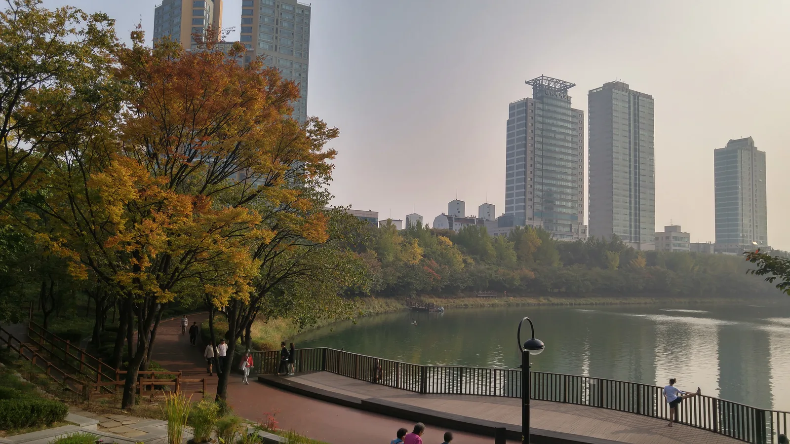
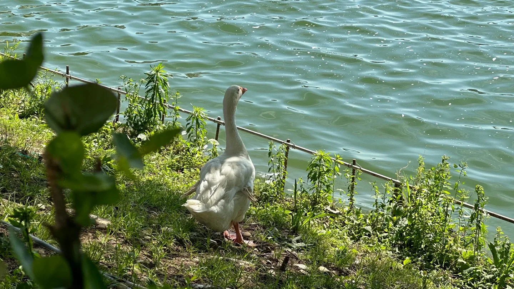
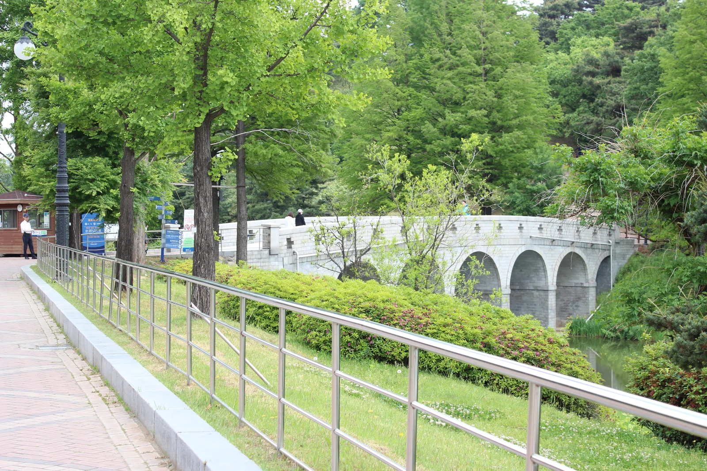
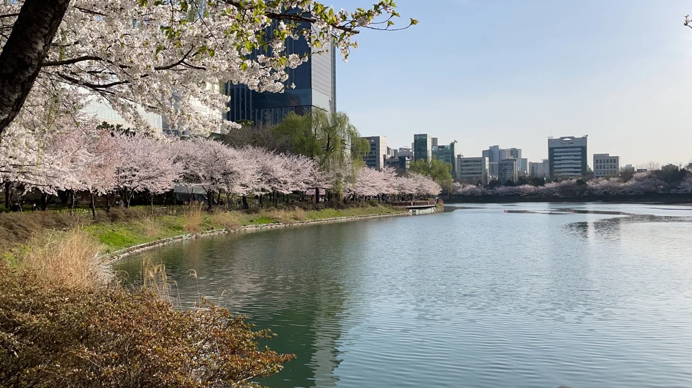
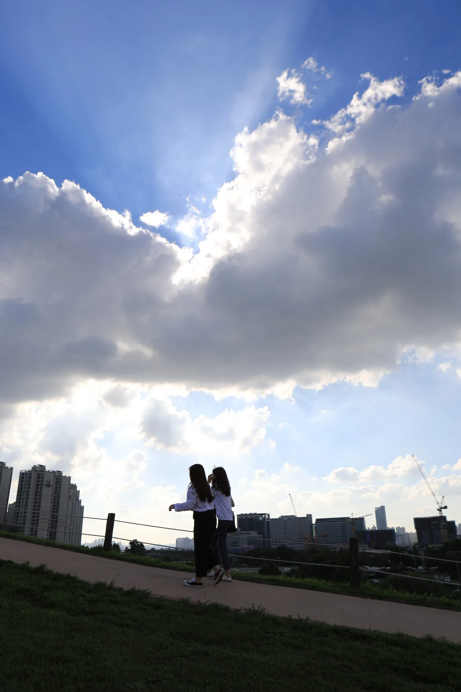

▲ 가을 단풍이 물든 석촌호수 둘레길. 봄철 벚꽃길로 유명하지만 가을에는 노랗고 붉게 물든 나무 터널이 또 다른 볼거리를 만든다
서울 송파구를 대표하는 두 공원, 석촌호수와 올림픽공원은 봄이면 벚꽃 인파로 몸살을 앓을 만큼 유명하다. 하지만 정작 두 공원의 가을 풍경은 상대적으로 덜 알려져 있다. 석촌호수 둘레길과 올림픽공원 몽촌토성 다리 일대에는 은행나무와 각종 활엽수가 늘어서 있어, 10월 말~11월이면 봄 못지않은 색다른 산책 코스가 펼쳐진다.
1. 석촌호수 — 서호·동호를 잇는 가을 둘레길

▲ 가을 단풍과 잠실 스카이라인이 함께 보이는 석촌호수 풍경. 서호와 동호로 나뉜 호수 둘레를 따라 산책로가 조성돼 있다 ⓒ Wikimedia Commons
정식 명칭이 송파나루근린공원인 석촌호수는 송파대로를 사이에 두고 서호와 동호로 나뉜다. 총면적 285,757㎡에 이르는 호수 둘레를 따라 조깅 코스와 산책로가 조성돼 있는데, 봄철 벚꽃이 만개하는 구간과 마찬가지로 가을철에는 은행나무와 단풍나무가 호숫가를 따라 물들며 색다른 풍경을 만든다. 호수에는 오리와 거위 등 조류도 서식해 산책 중 마주치는 재미도 있다.

▲ 석촌호수 물가에서 흔히 마주치는 거위. 호수를 따라 조성된 산책로에서는 다양한 조류도 함께 관찰할 수 있다 ⓒ Wikimedia Commons
매년 10월 말부터 이듬해 2월까지는 '호수의 가을과 겨울 그리고 루미나리에' 행사가 동·서호 일대에서 열려, 해가 진 뒤 조명 장식이 호수를 밝힌다. 2025~2026년 행사는 10월 31일부터 2026년 2월 28일까지 진행되며, 낮에는 단풍을, 밤에는 조명을 즐기는 이중 코스로 방문객이 몰린다.
송파구청에서 석촌호수 상세 정보 확인 가능2. 올림픽공원 — 몽촌토성 다리 일대 은행나무길

▲ 올림픽공원 몽촌토성으로 이어지는 다리 앞 은행나무길. 가을이면 이 일대가 황금빛으로 물든다(사진은 초여름 촬영) ⓒ Wikimedia Commons
1988년 서울올림픽을 기념해 조성된 올림픽공원은 몽촌토성을 중심으로 서부·남부·동부 권역으로 나뉘는 넓은 공원이다. 이 중 몽촌토성으로 이어지는 다리 인근과 평화의 문 주변 산책로에는 은행나무가 줄지어 서 있어, 가을이면 노랗게 물든 잎이 다리·성곽과 어우러진 풍경을 만든다. 공원 규모가 워낙 커서 목적지를 정해두고 걷는 편이 효율적이다.

▲ 올림픽공원 내 은행나무가 늘어선 산책로. 자전거·인라인 등은 통행이 제한되는 구간도 있어 표지판을 확인하고 이용해야 한다 ⓒ Wikimedia Commons
3. 들꽃마루 — 올림픽공원의 가을꽃, 황화코스모스
올림픽공원 안에는 '들꽃마루'라는 이름의 야생화단지(약 2,800㎡)가 있다. 9월 중순 무렵이면 이곳에 노란빛 황화코스모스가 만개하고, 경사로 반대편에는 풍접초(클레오메)가 함께 피어나 한 장소에서 두 가지 가을꽃을 볼 수 있다. 은행나무길과 함께 코스에 넣으면 노란 은행잎과 노란 코스모스가 이어지는 '옐로 테마' 가을 산책이 완성된다.

▲ 올림픽공원의 넓은 잔디언덕. 들꽃마루 외에도 곳곳에 휴식 공간이 마련돼 있어 은행나무길 산책 후 쉬어가기 좋다 ⓒ Wikimedia Commons

▲ 봄철 벚꽃이 만개한 석촌호수. 같은 자리라도 계절마다 전혀 다른 얼굴을 보여준다(사진은 벚꽃철 촬영) ⓒ Wikimedia Commons

▲ 올림픽공원 언덕에서 바라본 하늘. 탁 트인 잔디 언덕이 많아 산책하다 잠시 쉬어가는 방문객들을 자주 볼 수 있다 ⓒ Wikimedia Commons
4. 이용정보 — 위치·교통·입장료
| 구분 | 내용 |
|---|---|
| 석촌호수 위치 | 서울 송파구 송파나루길 166(신천동), 지하철 2·8호선 잠실역·송파역 인근 |
| 올림픽공원 위치 | 서울 송파구 올림픽로 424, 지하철 5·9호선 올림픽공원역·한성백제역 인근 |
| 입장료 | 두 곳 모두 무료(올림픽공원 일부 부속시설은 유료) |
| 가을 단풍 절정 | 10월 말~11월 중순 |
| 주차 | 올림픽공원 내 유료주차장, 석촌호수 인근 공영주차장 이용 |
두 공원 모두 지하철로 접근하기 편리해 주차 스트레스 없이 둘러볼 수 있다는 것이 장점이다. 석촌호수와 올림픽공원은 도보로도 이동 가능한 거리에 있어, 하루 코스로 두 곳을 묶어 오전엔 석촌호수, 오후엔 올림픽공원 순서로 돌아보는 일정도 무리 없다.
5. 석촌호수·올림픽공원 가을 산책, 가기 전 체크리스트
✅ 석촌호수·올림픽공원 가을 산책, 가기 전 체크리스트
· 석촌호수는 서호·동호로 나뉜 근린공원, 봄 벚꽃뿐 아니라 가을 단풍 둘레길도 볼 만함
· 석촌호수 '호수의 가을과 겨울 그리고 루미나리에'는 2025년 10월 31일~2026년 2월 28일
· 올림픽공원은 몽촌토성 다리·평화의 문 일대에 은행나무길 조성
· 들꽃마루(약 2,800㎡)에서 9월 중순부터 황화코스모스·풍접초 감상 가능
· 두 곳 모두 무료 입장, 지하철로 접근 편리해 주차 부담 적음
· 단풍 절정은 10월 말~11월 중순, 석촌호수↔올림픽공원 도보 이동 가능